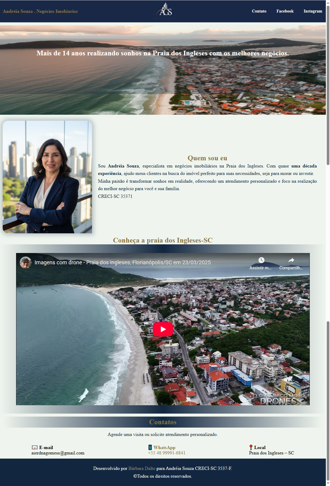

- Cabeçalho com identidade visual e navegação social
- Botões de contato direto (WhatsApp, Facebook e Instagram)
- Seção Hero com imagem de destaque e chamada estratégica
- Seção “Quem sou eu” com apresentação profissional
- Vídeo do YouTube incorporado
- Bloco de contatos com e-mail, WhatsApp e localização
- Rodapé com créditos e direitos autorais
- Layout responsivo para dispositivos móveis
- HTML5
- CSS3
- YouTube Embed para conteúdo multimídia
Landing Page
Corretora Andréia Souza
Acesse o projeto
Objetivo do Projeto: O projeto foi criado como exercício prático do Curso em Vídeo (HTML5 e CSS3), com foco em layout, tipografia, paleta de cores e responsividade, simulando um projeto real voltado para cliente final, onde simula uma Landing page institucional desenvolvida para apresentar os serviços da corretora Andréia Souza, especialista em negócios imobiliários na Praia dos Ingleses – SC.
Funcionalidades:
Preview:
